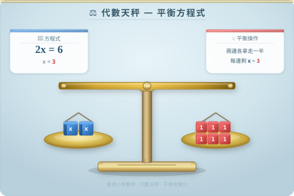

| # | 題目 | 答案 | 類型 |
|---|---|---|---|
| 1 | 在空格填上合適的數：(a) 8 + ___ = 15 (b) ___ − 7 = 9 (c) 20 − __ | ___ | manual |
| 2 | 在空格填上合適的數：(a) 6 × ___ = 42 (b) ___ ÷ 5 = 8 (c) 72 ÷ __ | ___ | manual |
| 3 | 「一個數加 7 等於 19」—— 這個「未知數」是多少？你是怎樣找出來的？ | ___ | manual |
| 4 | 哥哥的年齡是弟弟的 3 倍。如果弟弟今年 y 歲，用含有 y 的代數式表示哥哥的年齡。 | ___ | manual |
| 5 | 一個蘋果售 $a，買 5 個共需付多少元？（用代數式表示）如果 a = 4，共需付多少元？ | ___ | manual |
| 例1 | 用代數式表示：「比 n 多 8」和「m 的 4 倍少 3」。 | ___ | manual |
| 例2 | 如果 p = 6，求代數式 2p + 3 的值。 | ___ | manual |
| 6 | 解方程：x + 12 = 30 | ___ | manual |
| 7 | 解方程：x − 8 = 17 | ___ | manual |
| 8 | 解方程：25 + x = 41 | ___ | manual |
| 9 | 解方程：x − 15 = 9 | ___ | manual |
| 10 | 解方程：x + 4.5 = 10.2 | ___ | manual |
| 11 | 解方程：8x = 56 | ___ | manual |
| 12 | 解方程：x ÷ 7 = 11 | ___ | manual |
| 13 | 用代數式表示：「x 加 15」和「y 的 7 倍」。 | ___ | manual |
| 14 | 當 a = 10 時，求 a + 8 和 3a − 5 的值。 | ___ | manual |
| 15 | 解方程：x + 9 = 21 | ___ | manual |
| 16 | 解方程：x − 6 = 14 | ___ | manual |
| 17 | 解方程：5x = 35 | ___ | manual |
| 18 | 解方程：x + 2.8 = 9.6 | ___ | manual |
| 19 | 解方程：x ÷ 4 = 25 | ___ | manual |
| 20 | 解方程：4x = 100 | ___ | manual |
| 21 | 如果 3n + 7 = 28，n 是多少？（提示：先找出 3n 的值） | ___ | manual |
| 22 | 用代數式表示：「一個數的 5 倍減 8 等於 32」。然後解出這個數。 | ___ | manual |
| 23 | 解方程：2x + 3x = 30（提示：先合併同類項） | ___ | manual |
| 24 | 如果 x ÷ 3 + 5 = 12，求 x。（提示：分兩步——先處理 +5，再處理 ÷3） | 8 | auto |
| 25 | 解方程：x4 = 7（即 x ÷ 4 = 7，用分數形式表示） | ___ | manual |
| 26 | 兩個連續數的和是 37。如果較小的數是 x。(a) 用代數式表示較大的數。(b) 列方程求 x。 | ___ | manual |
| 27 | 長方形的長是闊的 2 倍。如果闊是 w cm。(a) 用代數式表示長。(b) 如果周界是 36 cm，列方程求 w。 | 76 cm | auto |
| 28 | 小美有 x 元，她用了 35 元後，還剩 42 元。她原有多少元？ | ___ | manual |
| 29 | 一包米的重量是 n kg。5 包同樣的米共重 40 kg。求 n。 | ___ | manual |
| 30 | 哥哥的年齡是弟弟的 3 倍。如果哥哥今年 27 歲，弟弟今年多少歲？（設弟弟 y 歲） | ___ | manual |
| 31 | 一條繩子長 L cm，剪去 28 cm 後，餘下的是原來的 13。求 L。（提示：餘下 = L − 28，同時餘下 = L3） | ___ | manual |
| 32 | 書架上有中文書和英文書。中文書比英文書多 12 本。如果英文書有 x 本，(a) 用代數式表示中文書數量。(b) 如果總共有 58 本書，求 x。 | ___ | manual |
| 33 | 一個長方形，長是闊的 3 倍。如果周界是 64 cm，(a) 設闊為 w，用代數式表示長。(b) 用代數式表示周界。(c) 列方程求 w 和長。 | ___ | manual |
| 🏔️1 | 三個連續數之和是 72。設最小的數為 n。(a) 用代數式表示三個數。(b) 列方程求三個數各是多少。 | ___ | manual |
| 🏔️2 | A 和 B 共有 $180。A 的金額是 B 的 2 倍。設 B 有 $x。(a) 列方程。(b) 求 A 和 B 各有多少元。 | ___ | manual |
| 🏔️3 | 爸爸今年 40 歲，兒子今年 12 歲。多少年後，爸爸的年齡是兒子的 2 倍？（設 y 年後 → 40+y = 2(12+y)） | ___ | manual |
| H1 | 用代數式表示：「m 的 6 倍多 9」和「p 除以 3 再加 2」。 | ___ | manual |
| H2 | 當 k = 12 時，求 5k − 8 的值。 | ___ | manual |
| H3 | 解方程：x + 13 = 37 | ___ | manual |
| H4 | 解方程：x − 11 = 26 | ___ | manual |
| H5 | 解方程：7x = 84 | ___ | manual |
| H6 | 解方程：x ÷ 3 = 18 和 4x + 3x = 49 | ___ | manual |
| H7 | 一盒雞蛋有 x 隻。媽媽用了 8 隻後剩下 22 隻。這盒雞蛋原有多少隻？（列方程解） | ___ | manual |
| H8 | A 和 B 二人共有 $240，A 是 B 的 3 倍。設 B 有 $x。(a) 列方程。(b) 求二人各有多少元。 | ___ | manual |
霖楓學苑 · LF Academy · 自動答案生成器 v1.0 · 手動題目請老師覆核